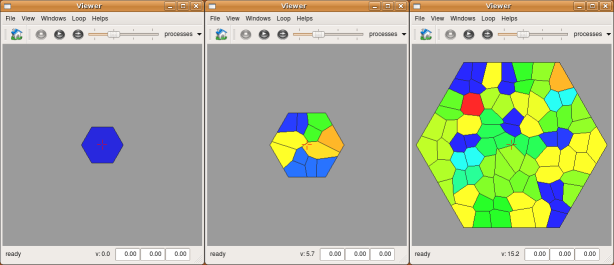

This package is an example package that perform both a global expansion of the tissue and the division of cells
Description
This package provide a complete simple description of tissue growth. Tissue growth is a combination of several processes mainly tissue expansion and cell division. Each of these processes have been demonstrated individualy in other tutorials (
www.vplants.com/tissue/simulation/global_expansion and
www.vplants.com/tissue/simulation/radial_growth). Here a simple global expansion field is used to increase the size of the cells. Then, when a cell reach a threshold volume, it is divided in two daughter cells. The division plan pass through the centroid of the cell and is oriented perpendicularly to the main axis of the cell.
Algorithms
Expansion
Since the geometry of the tissue is contained in the topological description of the mesh, tissue expansion deals with the modification of points positions only. Here a simple radial expansion is used. Point speed is a linear function of the distance of this point to a given center.
With this definition, all the parts of the tissue grow in size at the same speed.
Cell division
Cell division occurs when the volume of a cell is higher than a given threshold. Since the simulation is 2D, here, cell volume is the surface of the polygone representing the cell.
The effective division is performed by the "divide_cell" function defined directly in the simulation file. This function is directly documented in the script. Using a local function simplify the processus of maintaining the properties associated with the tissue. In this tutorial, the only property is the age of each cell.
Update properties
In this simulation, the only considered property is the age of each cell since it's creation. This age is updated at each step.
Simulation loop
All the actions are chained in a loop, and each step is repeted to run the simulation.
Simulation
All above operations have been written in
simu.py, the main simulation file. First launch
create_tissue.py to create a single hexagonal cell tissue the first time.
user@computer:$ python create_tissue.py
You must then launch
initialize_tissue.py to add the required properties to the tissue.
user@computer:$ python initialise_tissue.py
Last launch
simu.py to display the evolution of the tissue during growth.
user@computer:$ python simu.py

Exercices
To go further :
- Change the value of the shrinking factor to observe the modification of the overall shape of each cell
- Change the expansion field, either by playing with the constants (expand_center,expand_speed) or by defining a new type of expansion field (change expand(time,dt) function)
- You can change the initial tissue for another one. A good start might be to use the one obtained with the tissue drawing tutorial. Do not forget to rerun initialize_tissue.py to add the required properties to this new tissue
Bugs
If you experience bugs, feel free to report them on
gforge or send a mail to the author. Thanks